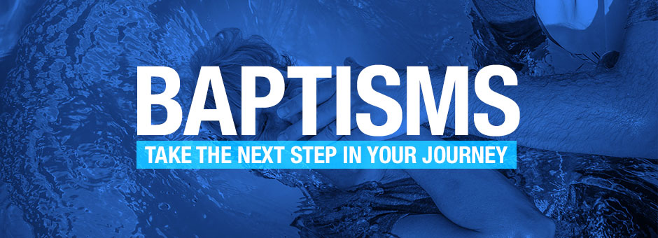

BAPTISM
Baptism is the next step after Salvation! It is the way God designed for us to go public about our faith and relationship with Jesus and a declaration of our choice to follow Him!
BAPTISM QUESTIONS
1. What is baptism?
Baptism is an outward expression of an inward transformation. It symbolizes how Jesus changed your life. Being baptized is a declaration to others that you’ve decided to follow Jesus, and allows them to celebrate this decision with you (Acts 16:31-34).
Baptism is a symbol and celebration of salvation: not the means of salvation (1 Peter 3:21). Jesus transforms our lives with the same power that brought Jesus back to life!
2. Why should I be baptized?
Jesus instructs instructs us to be baptized as a first step of obediance after salvation (Matthew 28:19-20, Mark 1:9).
Obedience to Jesus shows we believe and follow Him. (1 John 2:3). Jesus was not afraid to go public with His love for us...it actually cost Him His life, so we too should go public about our decision to follow Him. Baptism paints the picture that we have chosen to turn from our sin and towards Jesus (Acts 2:38-41).
3. When’s the best time to be baptized?
After someone chooses to follow Jesus...the next step is to be baptized. Anyone who commits his or her life to following Jesus is ready to be baptized (Acts 8:12).
4. Do you baptize children?
It is important, as parents, that we point our children to Jesus...but it is also very important that they are the ones making the decision (Romans 10:9).
In any case, it is after one chooses to surrender their life to Jesus and follow Him that they are baptiized (Acts 10:47-48). At Connection Point, we believe it is very important that a child be old enough to understand fully the decision they are making as well as to understand baptism and it's meaning.
5. What’s the difference between immersing, sprinkling and other ways of baptizing?
The original word for baptism most often referred to being immersed or submerged in water. Jesus was baptized by being immersed in the water and being rasied out of it (Matthew 3:16, Mark 1:10).
Submersion in the water symbolizes the death, burial and resurrection of Jesus (1 Corinthians 15:3-4). Being submersed underwater represents our death to sin and old way of life, and being raised out of the water is a picture of how Jesus raised us and gave us a fresh start in life (Romans 6:3-5).
6. Do I need to be baptized again?
Once a person has chose to follow Jesus and experienced salvation...baptism should follow. However, many people come to a place where they believe their salvation experience at an earlier age was not a true salvation experience. It's simple: Baptism follows salvation. If you have been bapized after your salvation experience....it is NOT NECESSARY for you to be baptized again.
SO??? ARE YOU READY TO BE BAPTIZED? CLICK HERE to contact us and let our leadership team know!